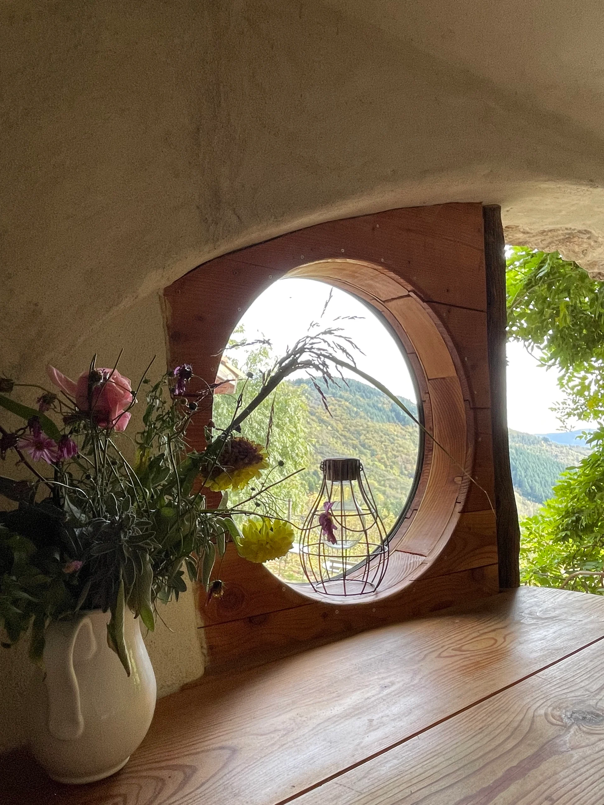
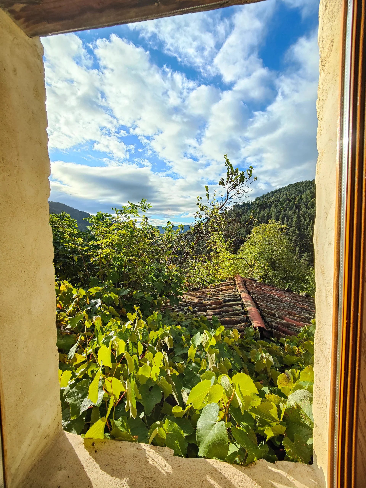
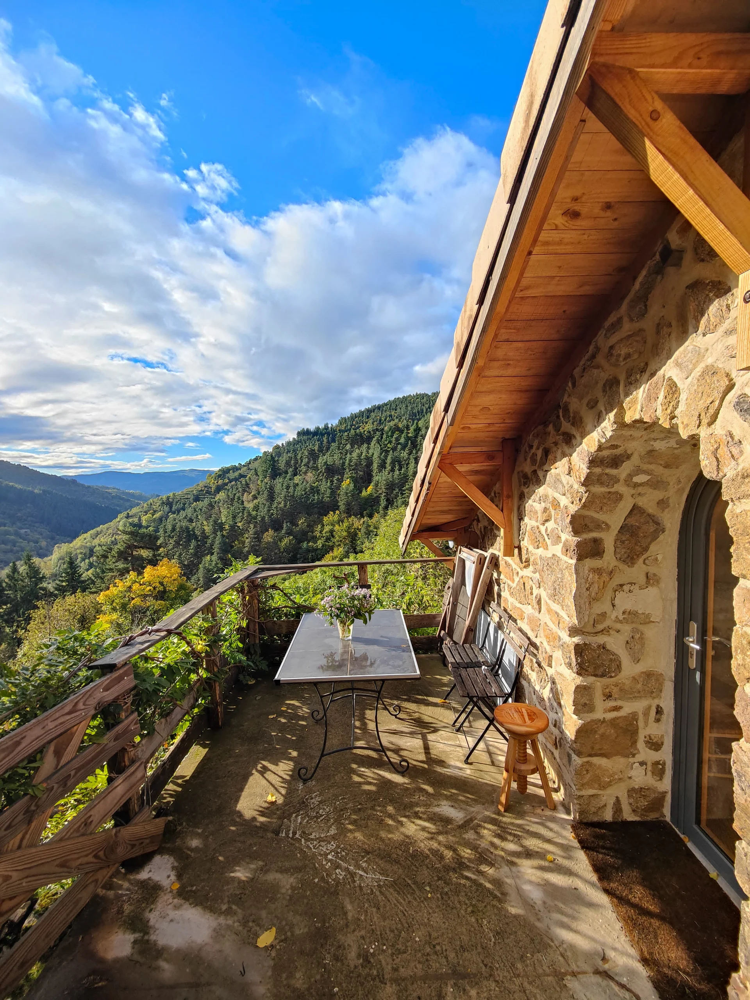
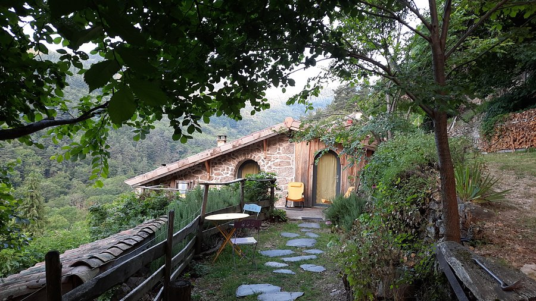
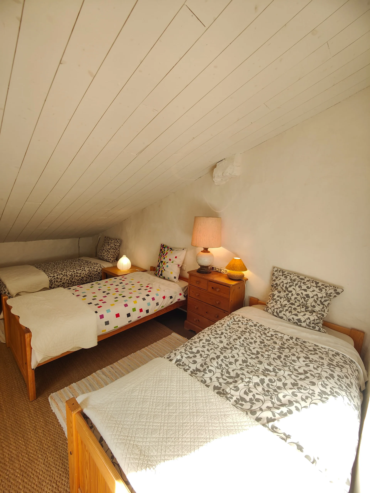
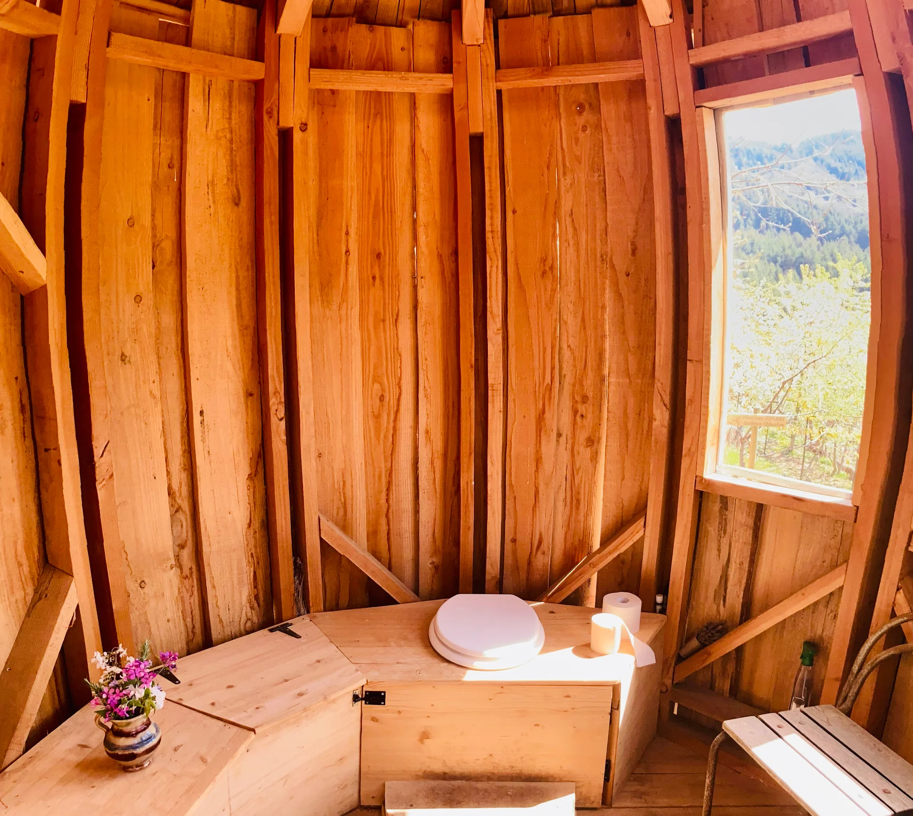

Gîte Terrasses des Boutisses
Au coeur des Monts d'Ardèche
La chambre double
2 personnes - 1 lit double - 1 douche - 1 WC - une cuisine extérieure équipée avec terrasse
Vous séjournerez dans une chambre double confortable, attenante à la maison principale, pensée comme un véritable petit cocon, propice au repos et à la détente.
Elle dispose de sa propre salle de bain avec toilettes, pour un confort optimal. Vous pourrez profiter d’une cuisine extérieure entièrement équipée, prolongée par une terrasse offrant une vue magnifique sur la vallée.
Galerie





La chambre Boutisse
2 personnes - 1 lit double - toilettes sèches extérieures
Cette chambre double confortable, attenante à la maison principale, vous invite à la détente dans une atmosphère douce et apaisante. Le lit double, orienté vers l’extérieur, s’ouvre directement sur la terrasse, offrant une superbe vue sur la vallée.
Vous aurez également accès aux toilettes sèches, où vous pourrez aussi, profiter de la vue, pour une expérience insolite et pleinement connectée à la nature.
Galerie



La chambre Mansarde
2 personnes - 2 lits simples - toilettes sèches extérieures
Nichée dans la dépendance du gîte, cette chambre est idéale pour accueillir 2 personnes. Elle offre deux lits simples confortables, invitant au repos dans un cadre paisible.
Vous profiterez également d’une agréable terrasse, idéale pour savourer un moment de calme en pleine nature, ainsi que d’un accès à nos belles toilettes sèches, pour une expérience authentique et respectueuse de l’environnement.
Galerie



